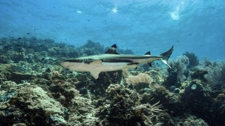

scuba & snorkelling
menyelam
Jika Anda memiliki minat dalam scuba diving, destinasi yang tak terbantahkan adalah Raja Ampat. Terletak di provinsi Papua Barat, Indonesia, pengalaman menyelam di Raja Ampat adalah yang paling istimewa. Dengan air yang bening dan keanekaragaman hayati laut yang melimpah, kawasan ini telah dikenal sebagai salah satu lokasi terbaik untuk menyelam di seluruh dunia.
Mari kita telusuri lokasi menyelam terbaik yang dapat ditemukan di Raja Ampat. Apakah Anda seorang pemula atau ahli dalam menyelam, terdapat sesuatu yang menarik bagi semua orang di surga tropis ini. Raja Ampat menawarkan pengalaman yang memikat untuk semua tingkatan keahlian. Jadi, mari kita merenungkan keindahan surga tropis ini dan selami pesonanya bersama-sama!
situs menyelam terbaik
Raja Ampat adalah surga bagi para penyelam scuba dan sering dinilai sebagai tujuan menyelam scuba terbaik di dunia dan salah satu tempat terbaik untuk dikunjungi di Indonesia. Karang keras dan lunak penuh dengan kehidupan laut. Anda akan menjumpai penyu, hiu, manta raksasa, dan masih banyak lagi di hampir setiap penyelaman! Kepulauan Raja Ampat adalah tempat yang bagus untuk melihat beberapa makhluk besar di bawah air.
Giant Trevally, Dogtooth Tuna, dan ikan pelagis lainnya diketahui sering ditemukan di wilayah ini. Hiu karang Blacktip dan Whitetip sangat umum ditemukan di Raja Ampat dan saya hampir terbiasa berbagi air dengan mereka. Raja Ampat juga terkenal dengan Hiu Wobbegongnya. Pertemuan dengan Pari Manta dan Lumba-lumba adalah hal biasa di perairan hangat Raja Ampat.
Tanjung Kri adalah situs paling terkenal di Raja Ampat dan paling sering menduduki peringkat terbaik. Lokasi penyelaman ini memegang rekor jumlah spesies tertinggi di satu lokasi, dalam satu kali penyelaman. Keistimewaan lokasi penyelaman Raja Ampat ini adalah keanekaragaman spesies dan warnanya yang murni.
Ini adalah salah satu lokasi menyelam terbaik di Raja Ampat untuk melihat Wobbegong yang terkenal, yaitu hiu karpet besar. Terumbu karang di sini sebenarnya cukup unik karena membentuk kolom sepanjang 25m, yang merupakan kedalaman sempurna bagi sebagian besar penyelam.
Puncak bawah air yang dimulai dari ketinggian sekitar 7m dan turun hingga kedalaman 30 meter di mana Anda dapat bertemu ikan-ikan besar. Ini juga merupakan tempat yang bagus untuk fotografi makro dan menemukan makhluk kecil. Ini adalah salah satu lokasi penyelaman paling terkenal di Raja Ampat, yang menunjukkan banyak hal mengingat kualitas di wilayah ini. Awasi ikan predator, kuda laut kerdil, dan bahkan pari manta raksasa di sini.
Puncak bawah air yang dimulai dari ketinggian sekitar 7m dan turun hingga kedalaman 30 meter di mana Anda dapat bertemu ikan-ikan besar. Ini juga merupakan tempat yang bagus untuk fotografi makro dan menemukan makhluk kecil. Ini adalah salah satu lokasi penyelaman paling terkenal di Raja Ampat, yang menunjukkan banyak hal mengingat kualitas di wilayah ini. Awasi ikan predator, kuda laut kerdil, dan bahkan pari manta raksasa di sini.
Ini adalah salah satu lokasi menyelam Raja Ampat terbaik untuk pemula. Jarang ada banyak arus. Karang lunak dan spons menutupi dasar laut, menjadikannya lokasi sempurna untuk pencarian makro. Anda bahkan mungkin cukup beruntung bisa bertemu dengan Manta raksasa!
Ini adalah tempat yang bagus untuk bertemu Manta Ray yang anggun. Makhluk agung ini dapat diamati sepanjang tahun di Manta Sandy. Bukan hal yang aneh untuk bertemu lebih dari sepuluh orang dalam satu penyelaman dan Anda bahkan mungkin cukup beruntung untuk bertemu dengan 'Manta Hitam' yang langka.
Dengan keindahan bawah laut yang memukau dan keanekaragaman hayati yang luar biasa, Raja Ampat tidak hanya menjadi surga bagi para penyelam, tetapi juga menyajikan pengalaman tak terlupakan bagi setiap pengunjungnya. Dari Tanjung Kri hingga Manta Sandy, setiap situs menyelam menawarkan petualangan yang menakjubkan di dunia bawah laut yang kaya akan kehidupan. Dengan demikian, menjelajahi keajaiban bawah laut Raja Ampat akan meninggalkan kenangan yang abadi bagi para petualang di setiap sudut dunia.